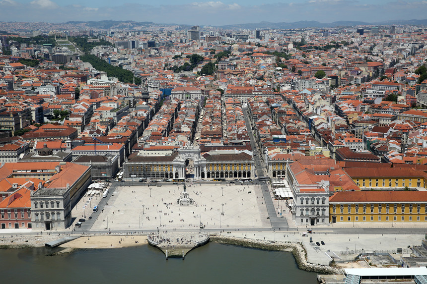
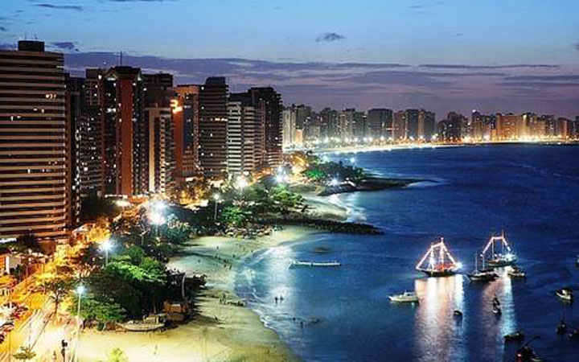

Sou formado em Administração, há quase 20 anos, pelo ISCTE - UAL, em Lisboa, tendo feito uma especialização ...
Nasci no dia 20 de dezembro de 1975 na região oeste de Portugal, e fui criado numa pequena e pacata localidade situada a 50 quilómetros de Lisboa, chamada de Olhalvo, onde tive uma infância muito feliz e extremamente desregrada, típica de um rapaz do campo...
Universidade Lisboa, primeira experiência profissional
Casamento, adaptação, casamento, SMD
Ir para âncora